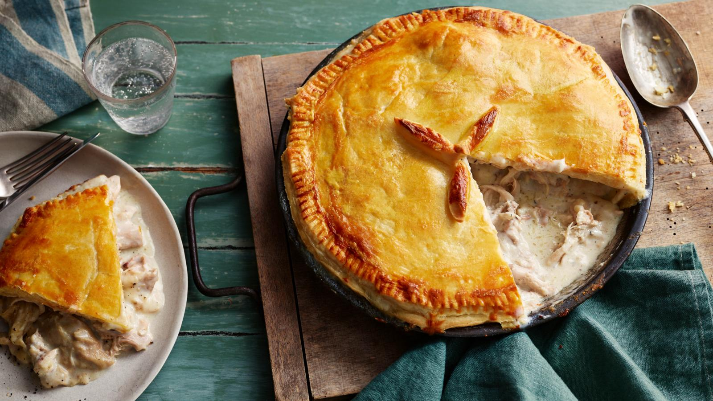

Traditional chicken pie

Description
A traditional chicken pie is classic comfort food and this fuss-free
recipe is one you'll want to make again and again. It's worth making your
own pastry if you can because the ready made stuff just doesn't match up
to the buttery loveliness of homemade.
Ingredients
For the filling
- 1 medium chicken
- 1 onion, peeled
- 6 cloves
- 1 carrot, peeled
- 2 bay leaves
- 1 chicken stock cube
- 6–8 peppercorns
For the pastry
- 450g/1lb plain flour
- ½ tsp salt or to taste
- 120g/4½oz butter, cold
- 120g/4½oz vegetable shortening, cold
- 1 free-range egg, beaten, for glazing
For the sauce
- 250ml/9fl oz whole milk
- 55g/2oz butter
- 55g/2oz plain flour
Steps
-
Place the chicken in a large pan. Stud the onion with cloves and add it
to the pan with the carrot, bay leaves, stock cube and peppercorns.
Cover with cold water and bring to the boil, then reduce the heat and
simmer until the chicken is cooked. This will take about 45 minutes–1¼
hours, depending on the size of the chicken.
-
Meanwhile, make the pastry. Sift the flour and salt together into a
large mixing bowl. Dice the cold butter and vegetable shortening and rub
them into the flour until the mixture resembles fine breadcrumbs. Mix in
just enough cold water to form a stiff dough. Turn this out onto a
lightly floured surface and knead gently to form a smooth ball of dough.
Wrap in clingfilm or place in a plastic bag and chill for at least 30
minutes.
-
When the chicken is cooked, take the pan off the heat. Remove the
chicken and place it on a plate. Put the pan back on the heat and reduce
the cooking liquid to about 250ml/9fl oz. Strain the reduced liquid into
a jug and leave to cool, then skim off the fat and discard it.
-
When the chicken is cool enough to handle, cut the meat into chunks and
discard the skin and bones.
-
For the sauce, remove the cloves from the onion. Put the onion in a food
processor with the reserved stock. Blend until smooth, then add the milk
and set aside.
-
Melt the butter in a pan and stir in the flour. Gradually add the stock
and milk, then bring to the boil, stirring continuously. Reduce the heat
and simmer for 4-5 minutes to cook out the taste of the flour. Season,
to taste, with salt and freshly ground black pepper, then fold the meat
gently into the sauce. Set the mixture aside to cool.
-
Preheat the oven to 220C/210C Fan/Gas 7. Roll out two-thirds of the
pastry and use it to line a 20–25cm/8–10in pie plate and add the cooled
chicken mix.
-
Roll out the remaining pastry to make a lid for the pie, brush the edge
with beaten egg and pinch the edges together to seal.
-
Decorate the top of the pie with leaves made from pastry trimmings and
brush all over with beaten egg. Make a hole in the top of the pie to
allow the steam to escape, then bake in the preheated oven for about 45
minutes, or until the pastry is golden-brown.